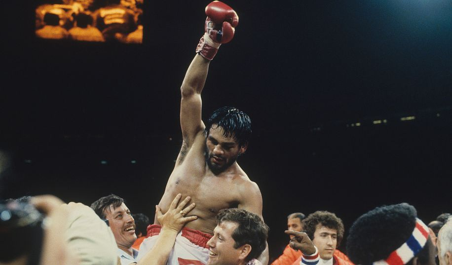

1968—2001
Дебютировал в феврале 1968 года.
В июне 1972 года Роберто Дуран вышел на ринг против чемпиона в лёгком весе по версии WBA Кена Бьюкенена. В 13-м раунде Дуран провёл удар в нижнюю часть корпуса. Бьюкенен упал, скрючившись пополам. Рефери зафиксировал нокаут. Результат был спорным. Часть экспертов сочла, что удар был ниже пояса.
В ноябре 1972 года в нетитульном бою Дуран встретился с пуэрториканцем Эстебаном Де Хесусом. Де Хесус в 1-м раунде послал панамца в нокдаун. По итогам 10 раундом единогласным решением победителем был объявлен пуэрториканец.
В январе 1973 года Дуран нокаутировал в 5-м раунде Джимми Робертсона.
В июне 1973 года он нокаутировал в 8-м раунде Эктора Томпсона.
В сентябре 1973 года Дуран нокаутировал в 10-м раунде Гаца Исимацу.
В марте 1974 состоялся повторный бой между Роберто Дураном и Эстебаном Де Хесусом. На этот раз бой был титульным. Де Хесус как и в 1-м бою в 1-м раунде отправил панамца в нокдаун. В 11-м раунде Дуран нокаутировал претендента.
В декабре 1974 года Дуран в 1-м раунде нокаутировал Масатаку Такаяму.
В марте 1975 года он в 14-м раунде нокаутировал Рэя Лампкина.
В декабре 1975 года Дуран в 15-м раунде нокаутировал Леонсио Ортиса.
В мае 1976 года Роберто Дуран вышел на ринг против непобежденного Лу Биццарро. Биццарро дважды падал в 10-м раунде и дважды в 14-м. Дуран нокаутировал противника в 14-м раунде.
В октябре 1976 года панамец в 1-м раунде нокаутировал Альваро Рохаса, имевшего отрицательным баланс побед и поражений, но допущенного до титульного боя.
В январе 1977 года Дуран в 13-м раунде нокаутировал Виломара Фернандеса.
В сентябре 1977 года он по очкам победил Эдвина Вируэту.
В январе 1978 года состоялся 3-й бой между Роберто Дураном и чемпионом мира в лёгком весе по версии WBA Эстебаном Де Хесусом. Дуран нокаутировал противника в 12-м раунде.
В январе 1979 года Дуран оставил лёгкий вес.
